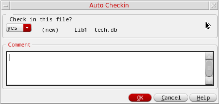
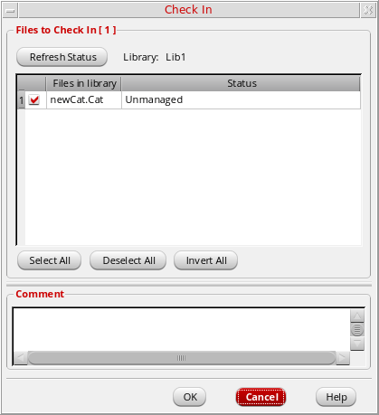
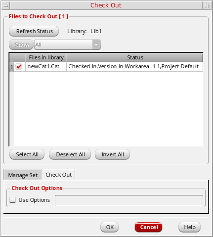
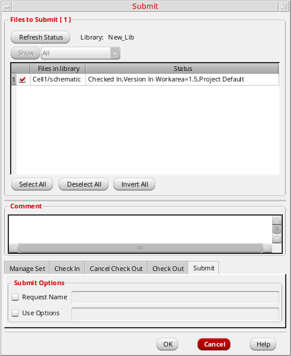
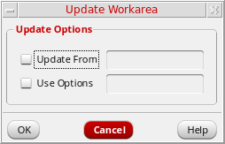
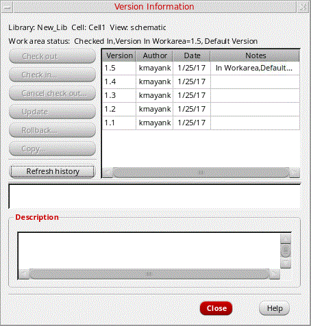
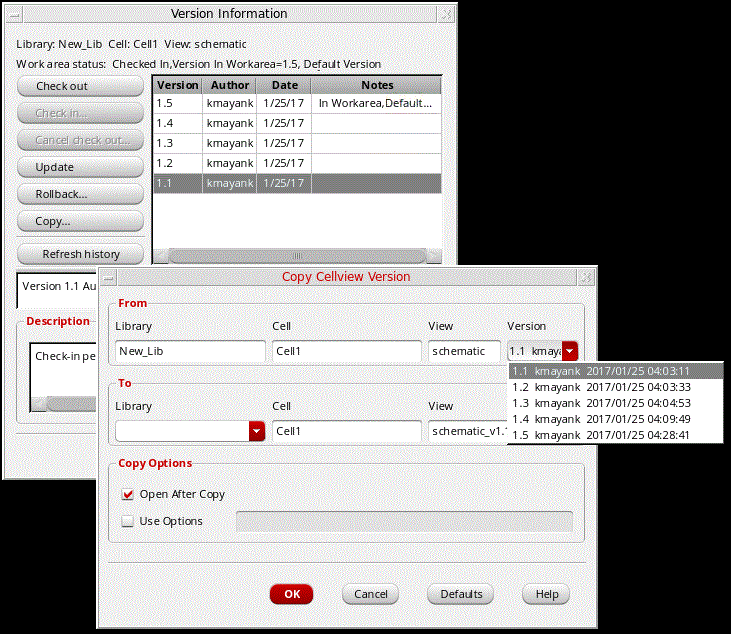
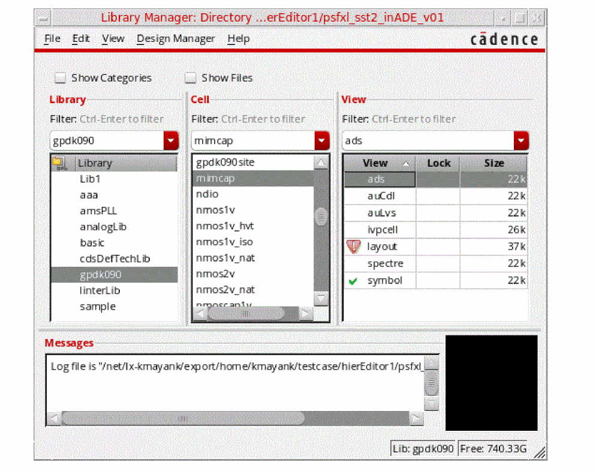

5
Managing Designs
Generic Design Management (GDM) is the Cadence® design management layer that interfaces with the particular design management system you are using. The GDM layer allows applications to interface with different design management systems using a set of basic commands (see
DD_GDM_OPTIMIZE environment variable to yes before you start Virtuoso.The following tasks are discussed in this chapter:
- Checking In Designs
- Checking Out Designs
- Canceling Check-Outs for Designs
- Checking In Properties
- Checking Out Properties
- Canceling Check-Outs for Properties
- Checking In Categories
- Checking Out Categories
- Canceling the Check-Out of a Category
- Using the Automatic Check-In Process
- Using the Automatic Check-Out Process
- Submitting Changes
- Updating Workareas
- Versioning
- Viewing Design Management File Status
Checking In Designs
To check in a design, select the item in the Library Manager that you want to check in (for example a library, cell, view, or file, and then choose Design Manager – Check In to display the Check In form.
Both the check-in and
- When you check out a file, the software copies the file from the project design management repository to your current workarea.
- When you check in a file, the software copies the file, as a completed version, from your workarea to the project design management repository and assigns the next version number.
DD_GDM_OPTIMIZE environment variable to yes before you start Virtuoso.The Check In form contains the following options:
| Form Option | Description |
|
A filter pull-down which can change the selection set to display one of the following as current status:
The filters options that are enabled will be restricted dependent upon the Check command that is current, mirroring the behavior described for the Check In tab below. |
|
|
Adds files to the selection set. For more information about selecting and deselecting items, see also “Selecting Items for Copying in the Copy Wizard”. |
|
|
Enter the text to describe the check-in. When you add the details, such as version information, about a library or cell check-in, the software attaches a copy of the comment to every cellview in the library. You cannot edit or delete the comment after you close the Check In form. |
|
|
When the Check In command is directly invoked, the Check In form format that is displayed is the same as that for the Check Out form and the Cancel Checkout form. However, the ability to switch command tabs, in the respective forms, is restricted to the command action that is currently applicable, as the legal file sets are mutually exclusive. The only exception is in relation to the Cancel Check Out and Check In tabs, when using the Check Out command, as either of these actions could be applied to checked out files. The Check In command also handles new, or un-managed files, but these file sets would be inappropriate in the context of, for example, a Cancel command. |
|
|
Optionally, select the Use Options check box and type any check-in options specific to the particular design management system you are using. |
|
|
For certain DM systems, an e-mail message is also sent, to notify team members that a new file is checked in. |
|
|
Refreshes the current status of items (view, files, and so on) saving you from having to reload the form. |
|
|
Retrieves the file set that was extracted from the original library manager design management command. All rows being selected. |
|
Figure 5-2 Library Manager (Tree View) Showing Mix of Checked In/Out DM States
Checking Out Designs
To check out a design, select the item (library, cell, view, or file) that you want to check out in the Library Manager, then select Design Manager – Check Out. All files that are associated with the selected item will now be listed in the displayed Check Out form.
Both the check-out and
- When you check out a file, the software copies the file from the project design management repository to your workarea.
- When you check in a file, the software moves the file, as a completed version, from your workarea to the project design management repository and assigns the next version number.
DD_GDM_OPTIMIZE environment variable to yes before you start Virtuoso.The Check Out form contains the following options:
| Form Option | Description |
|
Refreshes the current status of items (view, files, and so on), saving you from having to reload the form. |
|
|
A filter pull-down, which is disabled in the Check Out form, as there are no other filter states which can be applied to re-filter and create a different, valid, set. |
|
|
Adds all files to the selection set. For more information about selecting and deselecting items, see also “Selecting Items for Copying in the Copy Wizard”. |
|
|
When the Check Out command is directly invoked, the Check Out form format that is displayed, is the same as that for the Check In form and the Cancel Checkout form. However, the ability to switch command tabs, in the respective forms, is restricted to the command action that is currently applicable, as the legal file sets are mutually exclusive. The only exception is in relation to the Cancel Checkout and Check In tabs, when using the Check Out command, as either of these actions could be applied to checked out files.
Although all DM systems must return the DM checkout lock, some can perform the checkout again. Additionally, most, if not all, DM systems will return the checked-in version to the workarea. Some DM systems may restore the exact version that you had previously, while others may only return the latest version. That is, some DM systems will track the workarea’s older version before the checkout in order to restore it.
|
|
|
Optionally, select the Use Options check box and type any check out options specific to the particular design management system that you want to use. |
|
- Canceling Check-Outs for Designs, next
- Controlling Automatic Check-Out Behavior
- Changing Auto Check-Out Environment Variable Settings
Canceling Check-Outs for Designs
To cancel a check out operation for a library, cell, view, or file, select the item you want to cancel check out of in the Library Manager, and then choose Design Manager – Cancel Checkout to display the Cancel Checkout form listing the selected library, cell, view, or file.
Figure 5-4 Cancel Check Out Form
When you cancel a check-out operation, the software restores your workarea and the project design management repository to the states they were in prior to the check-out. You can cancel a check-out operation if you have not made any changes to the checked-out files or do not want to save any changes you made to checked-out files.
The Cancel Checkout form contains the following options:
| Form Option | Description |
|
Refreshes the current status of items (view, files, and so on) saving you from having to reload the form. |
|
|
Adds all files to the selection set. For more information about selecting and deselecting items, see also “Selecting Items for Copying in the Copy Wizard”. |
|
|
When the Cancel Checkout command is directly invoked, the Cancel Checkout form format that is displayed, is the same as that for the Check In form and the Cancel Out form. However, the ability to switch command tabs, in the respective forms, is restricted to the command action that is currently applicable, as the legal file sets are mutually exclusive. The only exception is in relation to the Cancel Checkout and Check In tabs, when using the Check Out command, as either of these actions could be applied to checked out files. |
|
|
Optionally, enter any check-out cancellation options specific to the particular design management system you want to use. |
|
Checking In Properties
A property file is treated the same way as any other design file, and the procedure for checking it in is the same as for any other design file (see “Checking In Designs”).
There are two methods of property and auto-checkin (and out), each with its own associated forms.
-
One version (as described in the steps below) is accessible directly from the Library Manager via the selection of Design Manager – Properties – Check In. It is this version we will focus on in this context.
Figure 5-5 Properties Auto-Check In Form Accessible from Design Manager Menu in Library Manager -
A second version of property and auto-checkin (and out) can also however be accessed from within Virtuoso itself, as a result of when object properties are being edited.
Properties are checked in and out in Virtuoso as per current auto var settings
Figure 5-6 Properties Auto Checkin Form Displayed During Object Property Edit in Virtuoso
To check in a property file, follow these steps:
- Select the item whose property file you want to check in.
-
Choose Design Manager – Properties – Check In.
The property file associated with the selected item appears on the Check In form. - (Optional) Follow the remaining steps in “Checking In Designs”.
- Click OK.
The following table summarizes the shell environment variable settings you type in the .cdsenv file to control automatic check-in behavior.
Checking Out Properties
See also
Each library, cell, and cellview can have a property file associated with it. Usually, you check out and check in the property files along with the other design data files, although you might want to check out the property files without the associated design data files; for example, when you want to edit the CDF information for a library or cell.
A property file is treated the same way as any other design file, and the procedure for checking it out is the same as for any other design file (see “Checking Out Designs”). To check out a property file, follow these steps:
- Select the item whose property file you want to check out.
-
Choose Design Manager – Properties – Check Out.
The property file for the selected item appears on the Check Out form.
Figure 5-7 Check Out Properties Form - (Optional) Follow the remaining steps in “Checking Out Designs”.
- Click OK.
See also “Canceling Check-Outs for Properties”.
Canceling Check-Outs for Properties
When you cancel a check-out operation, the software restores your workarea and the project design management repository to the states they were in prior to the check-out. You can cancel a check-out operation if you have not made any changes to a checked-out file or do not want to save any changes you made to a checked-out file.
To cancel a check-out operation, follow these steps:
- Select the item whose property file check-out operation you want to cancel.
-
Choose Design Manager – Properties – Cancel Checkout.
The property file associated with the selected item appears on the Cancel Check Out form. - (Optional) Follow the remaining steps in “Canceling Check-Outs for Designs”.
- Click OK.
The software cancels the check-out operation for each selected file.
Checking In Categories
A category is treated the same way as any other design item, and the procedure for checking it in is the same as for any other design item (see “Checking In Designs”).
To check in a category, follow these steps:
- Make sure you can see the category names (see “Changing How You View Library Information”).
-
Right-click a category name.
A pop-up menu appears. -
Choose Check In.
The files associated with the selected category appear on the Check In form.
Figure 5-8 Check In Categories Form - (Optional) Follow the remaining steps in “Checking In Designs”.
- Click OK.
For more information on using categories, see Chapter 8, “Managing Categories.”
Checking Out Categories
A category is treated the same way as any other design item, and the procedure for checking it out is the same as for any other design item (see “Checking Out Designs”).
To check out a category, follow these steps:
- Make sure you can see the category names (see “Changing How You View Library Information”).
-
Right-click a category name.
A pop-up menu appears. -
Choose Check Out.
The files associated with the selected category appear on the Check Out form.
Figure 5-9 Check Out Categories Form - (Optional) Follow the remaining steps in “Checking Out Designs”.
- Click OK.
For more information on using categories, see Chapter 8, “Managing Categories.”
Canceling the Check-Out of a Category
You can cancel the check-out of categories that you have checked out so that no changes you might have made to your files are saved.
To cancel a check-out, follow these steps:
-
Right-click a category name.
A pop-up menu appears. -
Choose Cancel Check Out.
The files associated with the selected category appear on the Cancel Check Out form. - (Optional) Follow the remaining steps in “Canceling Check-Outs for Designs”.
- Click OK.
Using the Automatic Check-In Process
By default, when you close properties or files that were automatically checked out, or try to exit a session without closing properties or files that were automatically checked out, the Auto Checkin form appears.
To complete the automatic check-in process, do the following:
- In the drop-down list to the left of the item name, select yes.
-
Add the text in the Comment text box to specify relevant information about the check-in.
- Click OK.
To stop the automatic check-in process, do the following:
Alternatively, you can click Cancel to stop the automatic check-in process.
To cancel a check-out, do the following:
Controlling Automatic Check-In Behavior
To control automatic check-in behavior, do the following:
-
On the Auto Checkin form, click Show Auto Checkin Preferences.
Automatic check-in preferences appear at the bottom of the Auto Checkin form.
You can set automatic check-in options separately for cellviews and for properties and files.
To display these preferences from the CIW, do the following:
The following automatic check-in settings are described:
Always Ask Me
To force the software to prompt you whenever the automatic check-in process is triggered, do the following:
You will always be prompted for automatic check-in. Your changes take effect immediately.
Never Ask Me
To set the automatic check-in behavior so that you are never prompted, do the following:
-
In the drop-down list, select never ask me.
A new drop-down list appears to the right of the original drop-down list.
Whenever you select never ask me in either of the When auto checking in drop-down lists, you must also select an automatic check-in option. -
In the drop-down list to the right of never ask me, select one of the following choices:
Choice Behavior - Click OK.
Your changes take effect immediately.
ddAuto* SKILL API irrespective of the GUI setting.Changing Auto Check-In Environment Variable Settings
You can set the CDS_PROMPT_CKIN and CDS_AUTO_CKIN shell environment variables to control the prompting and automatic check-in behavior. See
CDS_PROMPT_CKIN
CDS_PROMPT_CKIN controls whether the Auto Checkin form appears when you close properties or files that were automatically checked out, or if you try to exit a session without closing properties or files that were automatically checked out, while using a Virtuoso design environment product that has both a graphical user interface and automatic check-in capability.
all specifies that the form appears when either cellview or noncellview data is still checked out.
none specifies that the form never appears automatically.
views specifies that the form appears only when cellview data is still checked out.
files (default) specifies that the form appears only when noncellview data is still checked out.
CDS_AUTO_CKIN
CDS_AUTO_CKIN controls whether the software automatically checks in data files when you close properties or files that were automatically checked out or when you exit a Virtuoso session without closing properties or files that were automatically checked out.
-
If an application has a graphical user interface, this variable works with
CDS_PROMPT_CKIN. WhenCDS_PROMPT_CKINis set to display the Auto Checkin form, the software seeds the form to reflect the value ofCDS_AUTO_CKIN. WhenCDS_PROMPT_CKINis not set to display the Auto Checkin form, the software performs the check-in action specified by the value ofCDS_AUTO_CKIN. -
If the application does not have a graphical user interface, the software ignores
CDS_PROMPT_CKINand performs the specified automatic check-in action.
all specifies automatic check-in for both cellview and noncellview data.
none specifies no automatic check-in operations.
views specifies an automatic check-in for cellview data only.
files (default) specifies an automatic check-in for noncellview data only.
Summary Table of Automatic Check-In Settings
The following table summarizes the shell environment variable settings you type in the .cdsenv file to control automatic check-in behavior.
Using the Automatic Check-Out Process
By default, when you try to open properties, files, or cellviews that you have not checked out, the Auto Checkout form appears.
To complete the auto check-out process, do the following:
To stop the automatic check-out process, do the following:
Alternatively, you can click Cancel to stop the automatic check-out process.
- Controlling Automatic Check-Out Behavior (next)
- Changing Auto Check-Out Environment Variable Settings
Controlling Automatic Check-Out Behavior
To control automatic check-out behavior, do the following:
-
On the Auto Checkout form, click Show Auto Checkout Preferences.
Automatic check-out preferences appear at the bottom of the Auto Checkout form.
To display these preferences from the CIW, do the following:
The following automatic check-out settings are described:
- Always Ask Me (next)
-
Never Ask Me
Always Ask Me
To force the software to prompt you whenever the automatic check-out process is triggered, do the following:
You will always be prompted for automatic check-out. Your changes take effect immediately.
Never Ask Me
To set the automatic check-out behavior so that you are never prompted, do the following:
-
In the drop-down list, select never ask me.
A new drop-down list appears to the right of the original drop-down list.
Whenever you select never ask me in either of the When auto checking out drop-down lists, you must also select an automatic check-out option. -
In the drop-down list to the right of never ask me, select one of the following choices:
Choice Behavior - Click OK.
Your changes take effect immediately.
Changing Auto Check-Out Environment Variable Settings
To change the default behavior of the Auto Checkout form, reset the CDS_PROMPT_CKOUT and CDS_AUTO_CKOUT shell environment variables. See
CDS_PROMPT_CKOUT
CDS_PROMPT_CKOUT controls whether the Auto Checkout form automatically appears when you open data files using a Virtuoso design environment product that has a graphical user interface and automatic check-out capability.
Valid values for CDS_PROMPT_CKOUT are as follows:
| Value | Description |
|---|---|
|
(Default) The form appears when you open either cellview or noncellview data |
|
CDS_AUTO_CKOUT
CDS_AUTO_CKOUT controls whether the software automatically checks out a file when you open it with a Virtuoso product.
-
If an application has a graphical user interface, this variable works with
CDS_PROMPT_CKOUT. WhenCDS_PROMPT_CKOUTis set to display the Auto Checkout form, the software seeds the form to reflect the value ofCDS_AUTO_CKOUT. WhenCDS_PROMPT_CKOUTis not set to display the Auto Checkout form, the software performs the check-out action specified by the value ofCDS_AUTO_CKOUT. -
If the application does not have a graphical user interface, the software ignores
CDS_PROMPT_CKOUTand performs the check-out action specified by the value ofCDS_AUTO_CKOUT.
Valid values for CDS_AUTO_CKOUT are as follows:
| Value | Description |
|---|---|
|
(Default) Automatic check-out for cellview and noncellview data |
|
Summary Table of Automatic Check-Out Settings
The following table summarizes the environment variable settings you type in the .cdsenv file to control automatic check-out behavior.
Submitting Changes
If you are using a design management system that supports the submit operation1, then you can use the Submit command to submit items to your project design management repository when you are ready to integrate your design changes into a release as follows:
- Select a library, cell, view, or file.
-
Choose Design Manager – Submit.
If the design management system determines that a submit is needed2, the Submit form appears (see “Submit Form”).
 -
(Optional) To remove a file from the selection set for the submit operation, deselect the check box to the left of the file name.You can remove all files from the selection set by clicking Deselect All. You can select all files by clicking Select All. For more information about selecting and deselecting items on this form, see also “Selecting Items for Copying in the Copy Wizard”.
- (Optional) In the Comment field, type text (maximum 100 characters) to describe the design changes associated with this submit operation.
-
(Optional) In the Submit Options group box, select the Request Name check box and type a name you want to assign as the Integration Request (IR) name.
If you do not select this box and type a name, the design manager generates a name based on its DM integration behavior, comparable to thegdmsubmitUnix command. - (Optional) In the Submit Options group box, select the Use Options check box and type any submit options specific to your particular design management system you want to use.
- If you want to use specific options for the IR, turn on Use Options and type your options.
- Click OK.
The system submits an IR for your files and notifies you by e-mail (certain DM systems only).
gdmsubmit command (see “Generic Design Management (GDM) Commands” in the Cadence Application Infrastructure User Guide).Updating Workareas
You can update an item or workarea with the latest design data changes that team members have checked in to the project design management repository using the following commands:
Design Manager – Update
You can update libraries, cells, views, or files with the latest design data checked in by team members. The Update command is active if the selected item can be updated. If an item is checked out, it cannot be updated. The procedure is the same for libraries, cells, views, and files.
To update an item, follow these steps:
- Select the item you want to update.
-
Choose Design Manager – Update.
The appropriate Update form appears. -
(Optional) In the Update Options group box, select the Update From check box and type the name of a configuration in the field to update your workarea relative to the specified design management configuration.
For information about the types of configurations you can specify, see the documentation for your design management system. - (Optional) In the Update Options group box, select the Use Options check box and type any update options specific to your particular design management system you want to use.
- Click OK.
Your workarea is updated with the latest design data for the selected item.
Design Manager – Update Workarea
You can update your entire workarea with the latest design data checked in by team members.
To update your workarea with the latest design changes, follow these steps:
-
Choose Design Manager – Update Workarea.
The Update Workarea form appears.
Figure 5-10 Update Workarea Form -
(Optional) In the Update Options group box, select the Update From check box and type the name of a configuration in the field to update your workarea relative to the specified design management configuration.
For information about the types of configurations you can specify, see the documentation for your design management system. - (Optional) In the Update Options group box, select the Use Options check box and type any update options specific to your particular design management system you want to use.
- Click OK.
The software updates all the files in your workarea.
When team members check in a library for the first time, they must also add the library to the project.lib file (or cds.lib) before team members can share the data.
Versioning
To access the version information for a cellview or file, follow these steps:
- In the Library Manager, select the cellview or file for which you want to access the version information.
-
Choose Design Manager – Version Info.
The Version Information form is displayed:
Figure 5-11 The Version Information Form
The Version Information form above shows the version (revision) history of a single cellview or file. Status is limited only to the DM state, which can also be inferred from the set of DM sub-commands that are automatically enabled within the form.
Version information is indicated in the table as follows:
- Version: The version of the cellview or file.
- Author: The ID of the user who checked in the version.
- Date: The date when the version was checked in.
- Notes: Any details about the version. The term Default Version indicates the most recent version checked in by the user. If the user rolls back the cellview or file to a lower version, it is indicated as Default Version.
Alternatively, right-click the title bar of the View list box in the Library Manager form and choose Version from the pop-up menu.
The Version column is added to the View list box of the Library Manager form.
Using the Version Information Form
Perform the required action based on the Version Information form options and descriptions detailed below:
Copying a Version of a Cellview or File
The Copy Cellview Version form is used to copy (export) a specific cellview version in the library database, primarily so that it can be viewed side-by-side with another (latest) version of the cellview that is currently being edited in Virtuoso.
To copy a version of a cellview or file:
- Select a cellview that has been checked in.
-
Choose Design Manager — Version Info.
The Version Information form appears. - Select the version you want to copy.
-
Click Copy.
The Copy Cellview Version form appears.
Figure 5-12 Copy Cellview Version Form
The name of the source Library, Cell, View, and Version number display in the fields of the From group box.
Some default information appears in the fields of the To group box. You can change any or all of the To values. The default destination view name is the original view name with the version number appended using the format originalViewName_v#. For example, schematic_v1.1. - Select the Lib/Cell/View version to be copied from the Version pull-down.
- In the Library drop-down field, in the To group box, type or select a destination library.
- (Optional) In the Copy Options group box, select the Open After Copy check box to open the copied cellview after the copy operation.
- (Optional) In the Copy Options group box, select the Use Options check box and type any copy options specific to your particular design management system you want to use.
- Click OK.
- The software will copy the cellview dependent upon the rules detailed below.
Copying Cellview Version Rules
The software copies the cellview to the specified destination according to the following guidelines:
- If you type a new library name in the Library field, the New Library form appears followed by the Technology File for New Library form. See “Copying to a New Library”.
- If you type an existing cellview name in the View field, the Confirm Overwrite form appears.
-
If you leave any of the fields blank in the To group box, the Missing Destination Name message prompt appears.
To resolve the error, click OK and type the missing destination library, cell, or view name. -
If the information you type in the fields of the To group box is that same as what appears in the fields of the From group box, the Illegal Destination message prompt appears.
To resolve the error, click OK and type a valid destination library, cell, and view name. -
If you type an invalid destination name (for example, one containing an illegal character), the Invalid Copy Version Destination Name message prompt appears.
Examples of illegal characters include space, backslash ( \ ), slash ( / ), and punctuation marks such as period ( . ) and comma ( , ). -
If you try to copy a cellview version that is being edited by someone else, the message
Is currently edit lockedappears. - If you try to copy a cellview version for which you do not have file permission, a message prompt to that effect appears.
-
If you try to copy a read-only version of a cellview (or any other file), the Copy Cellview Version Failed message prompt appears.
You cannot overwrite a read-only version of a file. To make the file writable, you must change the access permissions.
Viewing Design Management File Status
You can view the design management status of all cells in a library, all views for a cell, and individual files by selecting Design Manager – Show File Status.
Figure 5-13 Possible DM Status Icons that can be seen in the Library Manager View list box
Figure 5-14 DM File Status Form
The DM File Status form contains the following options:
Figure 5-15 DM File Status Form Showing Checked Out Status
DM Status Settings
The following status can be set for an item
- Checked In specifies that a file is available for check-out to a workarea. The form also shows the project default version number and who created the version.
- Checked Out specifies that a file has been checked out to a workarea. The form displays who has checked out the file.
- Locked specifies that a file has been locked by you or someone who shares your workarea (sandbox model). The form shows who locked the file and the machine that person is working on. Do not check in a locked file.
Displaying the Update Needed Icon
The update needed icon is displayed in the Library Manager window in the following scenarios:
- If the DM status of view files is checked in within your workarea, and an update needs to be applied in the cellview.
-
If the DM status of view files is checked in within your workarea but is checked out by another user in another workarea, and an update needs to be applied in the cellview.In this case, a different icon is displayed if either the update is not needed, or the update needed feature is not available in your DM.
To update the content in the cellview, you need to select the Design Manager – Update option from the Library Manager window, or run the gdmupdate command from the shell terminal.
After the update is successful, the updated needed icon is replaced with either the checked in icon, or the checked out by others icon in the Library Manager window.
For more information on the related GDM command, see gdmstatus in Cadence Application Infrastructure User Guide.
For more information on the related GDM SKILL function, see gdmstatus in Cadence Application Infrastructure SKILL Reference.
Check In, Check Out, and Cancel Check Out Using the DM Status Form
To save you from having to run the separate Check In, Check Out, and Cancel Checkout options in the Design Manager menu, these actions can also be performed in the DM Status form.
In the DM Status form, you have the ability to perform these actions for any files shown in the list, which are either from the full list, or from one of the applicable filtered lists.
Figure 5-16 DM File Status - Check In Form
These check in/out actions, along with the Refresh Status command, are also contained in a common tabbed structure in the Check In, Check Out and Cancel Checkout forms. However, when a specific check command is selected, the other command tabs will be unavailable. For example, if you choose the Check In menu option to display the Check In form, then the Check Out and Cancel Check In tabs contained therein will be disabled. This does not however apply to the Status form which allows you to invoke all of these actions.
.cdsenv file will be updated and your preference registered for future actions in this area.Figure 5-17 Showing Checked Out Files in the DM File Status Form
- VersionSync does not support submit.
- Depending on your design management system, a submit may be needed after you check in a new version so that all users can update to it, or perhaps to have it included as part of a versioned release set.
Return to top